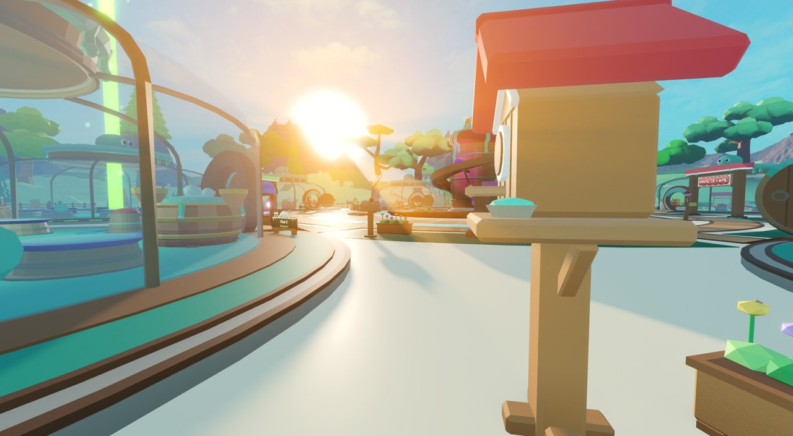
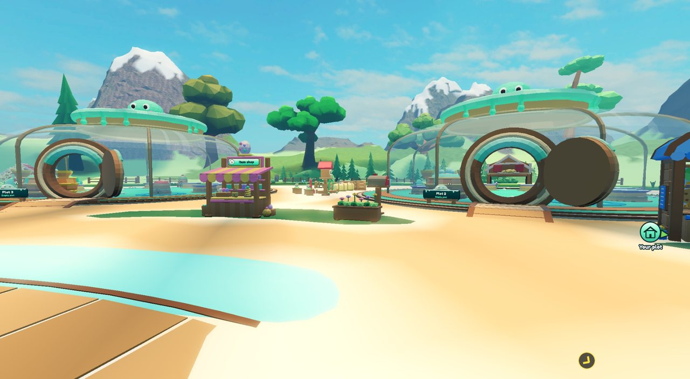
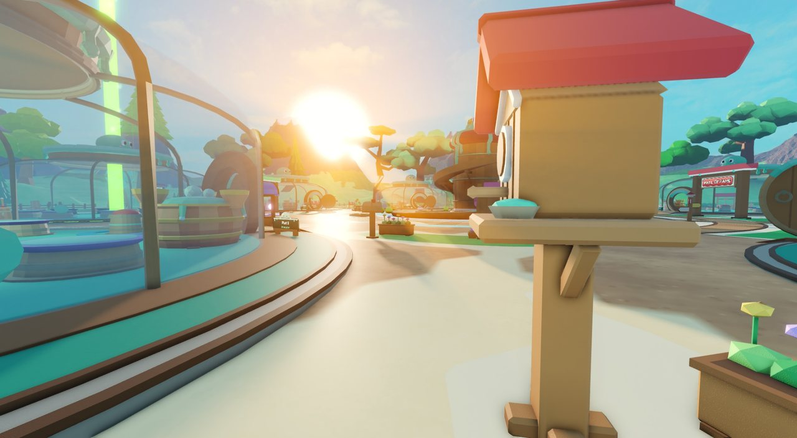
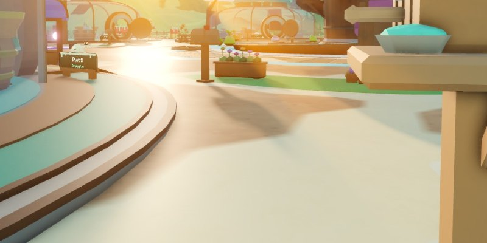
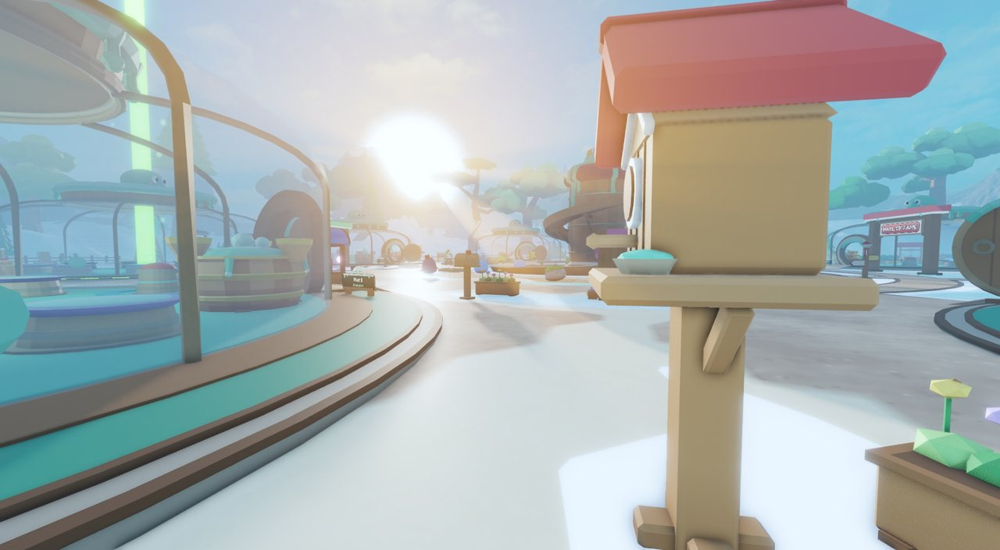
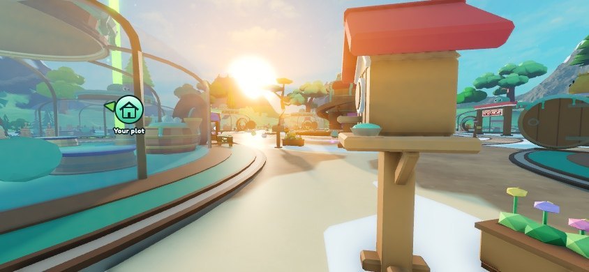
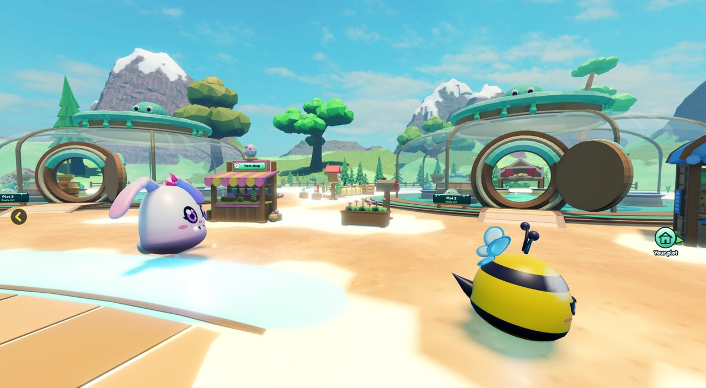
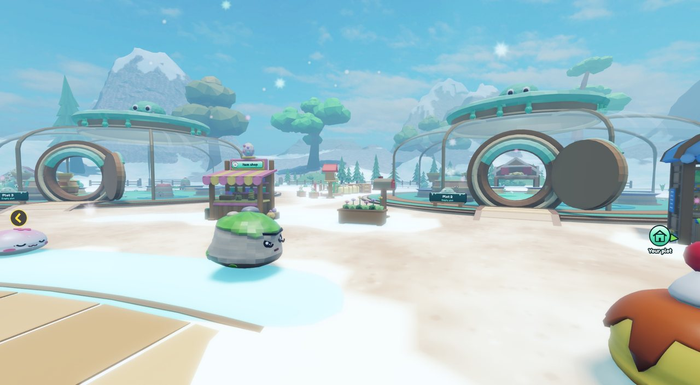

Merijn: "can you make the sand not so reflecting". Real Studio screenshots, same spot for every option, at 13:00 (high sun) and 17:12 (low sun), in clear weather and in full snow. Pick one; only those values change.
Main cause, already fixed: in the live game the three ground textures did not load ("Failed to load MaterialService.SlimeSand"). They belong to Merijn's account and had not been shared with the new Forgeborn experience. Without them the ground turns smooth white and mirrors the sun. They are now granted, so the next live server should look like "Now" below, not "Live before the grant". No publish is needed. The options A, B and C only polish the smaller shine that is left.
Live before the grant vs. now
"Live before the grant" is a Studio rebuild of what you saw: the same place with the three ground textures failing to load, which gives the same console error.
Low sun

Midday

What still shines with the textures loaded: the light yard and plaza you walk on is terrain Sand, and the dirt paths are terrain Ground. Their custom materials (SlimeSand, SlimeGround, SlimeGrass) only have a colour texture, so Roblox treats them as fairly smooth. With the sun low in front of you, a bright streak of sunlight shines off the path and sand. The big FieldSand part (SmoothPlastic) lies under the terrain and is not what you see.
Nothing more
Keep the grant only. The ground looks like "Now": textured, with a small shine toward a low sun.
A recommended
Fully matte ground: a flat rough map (and a black metal map) on all three ground materials. Colours stay the same. Only the ground changes.
B
A, plus the sand a bit darker and warmer (246,220,170 → 216,194,150), so the yard stops glowing near-white in the bright sun.
C
A, plus the whole world's reflections 30% lower (EnvironmentSpecularScale 1 → 0.7). This also touches slimes, glass and props.
Low sun, looking into it
This is where the reflection is strongest: the path and sand in front of the sun get a white shine streak.
Keys 0 to 3 also switch. Look at the path just left of the mailbox.
Clear weather

Close-up of the shine

Snow

Phone (844 × 390)

High sun, the yard
At midday the shine streak is small. Here the sand mostly looks very bright and pale, which is what option B is for. Slimes wander, so they differ between shots.
Clear weather

Snow

Your screenshot: the white grass
In your screenshot the lawns and the green border band were white. Two things are going on:
During Snow it is by design. SnowGround turns grass and the yard white and puts a light frost on the paths.
After snow it can get stuck: that is a bug. I let snow settle and then cleared it. The terrain went back to normal, but 41 of the 171 floor parts (lawns, the green band, the yard disc) stayed snow-white. The likely cause: SnowGround keeps those parts in a "weak" table, so Lua can forget some of them and never paints them back. This is a separate fix in SnowGround, not part of this change.
Exact values
Setting
Now
A
B
C
SlimeSand / SlimeGround / SlimeGrass RoughnessMap
none
flat white (rough 1)
flat white
flat white
… MetalnessMap
none
flat black (metal 0)
flat black
flat black
Terrain Sand colour (GroundTerrain.COLORS.Sand)
246,220,170
246,220,170
216,194,150
246,220,170
Lighting.EnvironmentSpecularScale
1
1
1
0.7
The two 64 × 64 maps are already uploaded under Forgeborn (image ids 70760827109914 and 119839088508058), so the group game loads them without a grant. Nothing is published.
What these shots do not show
Not checked on a real phone. The phone shot is the Studio window at 844 × 390.
C on slimes: slimes in the C shots look about the same to me, but I did not get a still close-up of one (they keep moving), and no Mythic was in view.
Rain, Starfall and night were not shot. Snow was pinned at full cover on the camera client.
The options were set from a test script in a Studio playtest; the real change goes into default.project.json (and GroundTerrain for B).
Decided
Merijn picked "Texture fix only" (2026-11-06). Built: the three ground ColorMaps are granted to the experience, and tools/assets/check_assets.py now checks and grants every asset id in default.project.json and world/, so a missing grant like this can't slip through again.
Not changed: no roughness or metal maps on the ground materials (A), no sand colour change (B), no lighting change (C). The two flat maps uploaded for the test (images 70760827109914 and 119839088508058, owned by Forgeborn) are not used.